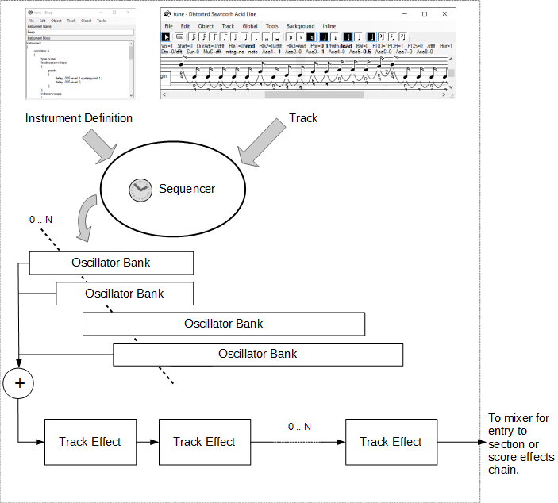

Synthesis Engine Architecture
The synthesis engine is organized as a set of reductions fixed in three phases: track/instrument, section effect, and score effect. There can be any number of tracks in a section and any number of sections. The output of all tracks in a section is mixed (summed) and the mix feeds into the section effects chain. The outputs of all section effects chains are mixed (summed) and the mix feeds into the score effects chain, which produces the final stereo output.
There is also a "section" that passes it's input through unchanged (called "default") when section effects processing is unneeded.

Figure 1: Synthesis engine architecture
Each Track/Instrument pair corresponds to a single (stereo) channel. The track describes the series of events (notes and commands) interpreted by the sequencer. The instrument defines the synthesizer audio generating elements that are driven by the sequencer.
The sequencer schedules the creation and destruction of an audio-generating entity called an oscillator bank. This entity corresponds to a single note (or sequence of notes tied together). The oscillator bank many contain multiple oscillators and effects in a processing chain. However, each oscillator bank is independent of the others and will be created and destroyed independently of the others. For polyphonic music there are multiple oscillator banks in existence at one time.
The stereo output data from the oscillator banks is mixed and processed through the track effects chain, which may have any number of effects processors. The final output of the track effects chain is routed to the mixer on the input of either one of the section effects (if the track is a member of a section) or directly to the score effects.
If there are no oscillator banks in existence at a particular point in time, silence is generated and fed through the track effects chain, which operates continuously without regard to the number of oscillator banks.
The oscillator bank structure is defined by the 'oscillator' and 'effect' declarations in the instrument body. The track effects are defined by the 'trackeffect' declarations in the instrument body.

Figure 2: Track/instrument structure
Oscillator Bank Structure
An oscillator bank must contain at least one oscillator, but may contain any number more than that. Each oscillator runs independently according to the schedule of it's primary envelope generator, which is the envelope in control of the loudness (amplitude) of output.
The output of all oscillators in a single oscillator bank is mixed and the mix fed through the effects chain for that oscillator.
Figure 3: Oscillator bank structure
Documentation for individual oscillator types can be found here: